Development Journey — Seven open-source "craft" apps make one coffee launch
How this document was made, and what it cannot show. It covers two Claude Code sessions. Session 1 (1db109c8…jsonl, 2026-10-08 13:29 to 2026-10-09 13:36) did the research report and the production build. Session 2 (the current one) replaced the music, explained the old score, started the demo server and wrote this page. Session 1 material is reconstructed from its saved transcript file with a small extraction script, from HANDOFF.md, DELIVERABLES.md, the build scripts and their build logs.
Two limits apply. (1) Three user entries in the session 1 file at 21:34 are stored in an unreadable encoded form. The "no toy projects" rule below is quoted from the memory file written one minute later, memory/production-grade-no-toys.md. (2) The images the agent looked at, the Chrome screenshots and the agent's reasoning are not in the file. The verification claims for session 1 are therefore the agent's own reports at the time, not re-checked here unless this page says so.
The per-craft design facts in section 3 and the consistency audit in section 4 come from one research subagent that read all 11 build files in session 2. Line references such as build_identity.py:22-29 are its findings.
Contents
- Reader's map: the 7 crafts
- 1. The briefs
- 2. Cold start: research, install, first logo
- 3. The build, craft by craft
- 4. The crux: one style and one message across 7 apps
- 5. Tools and features used
- 6. What went wrong, and the fixes
- 7. Session 2: the music that failed
- 8. Verification
- 9. Costs, limits and agents
- 10. Where things stand
Reader's map: the 7 crafts
Artcraft is a set of free, open-source desktop apps. Each one is a "clean-room" rebuild of a well-known Adobe app: it does the same job with similar concepts, but it is written from scratch and does not open Adobe's own project files in all cases. Each craft also has a command-line program (<name>-cli.exe) with an mcp mode. MCP (Model Context Protocol) is the standard way an AI agent such as Claude Code calls a program's functions. That is why an agent, not a person, could drive all seven apps in this project.
| Craft | Adobe equivalent | What it is for, in plain words | What it made here |
|---|---|---|---|
| vectorcraft 0.7.0 | Illustrator | Drawing with shapes and curves, not pixels. Logos stay sharp at any size. | Logo, colour palette, bag label, business cards, print files, app icons |
| photocraft 0.5.0 | Photoshop | Editing and compositing pixel images in layers. | A 67-layer product "photo" of the coffee bag, built from nothing; social-media crops |
| lightcraft 0.4.0 | Lightroom | Managing a photo library and giving a whole shoot one consistent colour "look". | A graded 4-photo series, exported for web, screen and print |
| effectcraft 0.6.0 | After Effects | Motion graphics: animated logos, titles, overlays. | Logo animation, title card, name captions, end card, a web animation |
| filmcraft 0.4.0 | Premiere Pro | Video editing: putting clips on a timeline with sound and captions. | A 30-second launch video and a 15-second vertical cut |
| designcraft 0.4.0 | InDesign | Page layout for multi-page documents: brochures, books, guidelines. | A 12-page brand-guidelines book |
| pdfcraft 0.4.0 | Acrobat | Assembling, organising, checking and protecting PDF files. | A 19-page press kit, a product sheet and a password-protected copy |
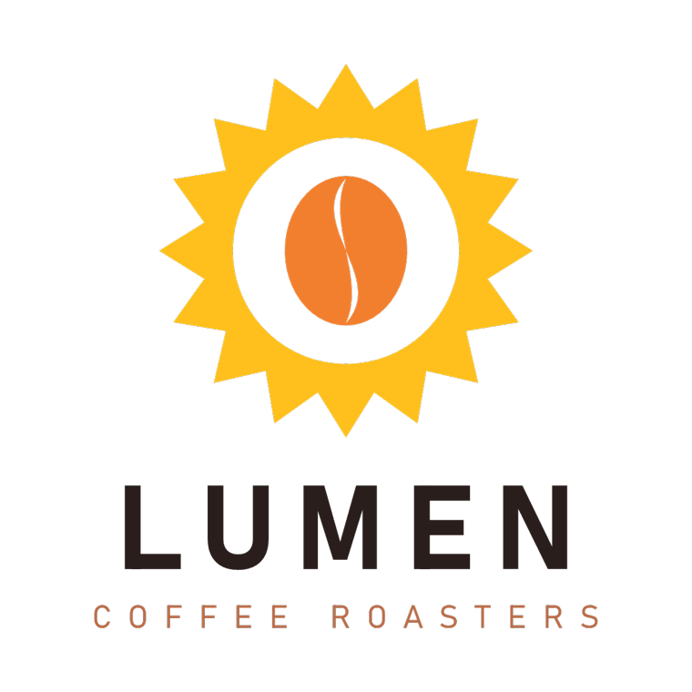
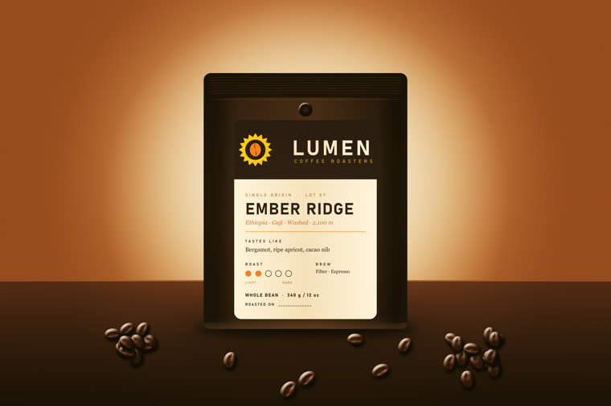
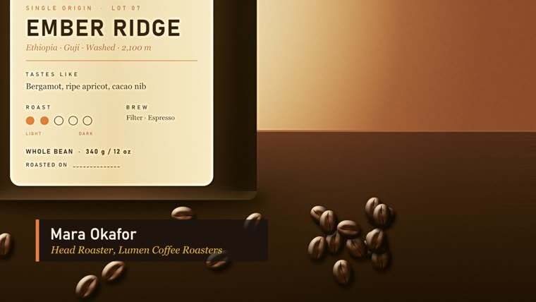
1. The briefs — what was actually being asked
The work grew from three prompts. Each one changed the scope.
Brief 1, 2026-10-08 13:29 — research.
Read @transcript.txt.
scan https://github.com/orgs/storytold/repositories
explain how the repositories map to Adobe applications
AMIAQ
transcript.txt is the transcript of the YouTube video "Someone Just Rebuilt Adobe for Free, and Claude Can Run Them All (7 apps tested)" by Jay E | RoboNuggets. "AMIAQ" means "ask me if any question"; at 13:32 the user asked the agent to remember that, and it became the memory file amiqa-ask-questions.md. The agent found 41 repositories in the organisation, of which 12 are crafts and 7 map to Adobe apps.
Brief 2, 2026-10-08 21:31 — build something.
Can we create at least one project per craft starting with no input? Every artifact will be created by the crafts. AMIAQ
The agent asked 4 questions in one form, and the user took the recommended option each time: install from the release files (not build from source); "no input" means generate everything from scratch; photocraft and lightcraft get craft-made images only (no stock photos, no AI images); outputs stay in a local folder. While the agent drew a first test logo, the user added the rule that set the quality bar for everything after it:
I want no trivial projects as if I am an experienced creative professional using the crafts for production work. No toy projects.
(Quoted from memory/production-grade-no-toys.md; see the note at the top.) The agent answered with a production plan for one fictional client, Lumen Coffee Roasters, in which each craft feeds the next.
Brief 3, 2026-10-09 03:13 — execute, with a stop condition. The user set the model to Opus 5.5 and effort to "high", then used /goal:
please execute the production plan with human in the loop. success is defined by using each and every of the craft tools to produce one or more production grade artifact. use computer use/playwright/cdp tools to verify your work.
/goal installs a Stop hook: the session cannot end until the condition holds. In practice "human in the loop" meant very little here. The user made no further prompt during the 47-minute build (03:13 to 04:00). The loop was the agent looking at its own renders.
Interpretations made silently. "Production grade" was read as print and broadcast specifications: CMYK colour, spot inks, 3 mm bleed, PDF/X-4, 16-bit images, ProRes with transparency, loudness targets, interchange files. "Starting with no input" was read strictly: even the product "photos" are renders that photocraft draws from shapes, and lightcraft grades those renders as if they were a camera shoot.
2. Cold start — research, install, first logo
Phase A: the research report (2026-10-08 13:29–15:20)
Seven prompts built one HTML report, summaries/artcraft-adobe-map-github.html: the mapping table; usage examples for a non-designer (the user wrote "i am not an Adobe user. no experience with creative designs"); 6–7 example prompts per craft ("beef up the example prompts"); the Codex MCP config syntax (~/.codex/config.toml, [mcp_servers.<name>]); install steps written as natural-language prompts; and finally a README and a public GitHub Pages site. The page went live at az9713.github.io/artcraft-tutorial (repo az9713/artcraft-tutorial, commit cb83523).
Two warts from this phase. The agent called the Adobe set "six apps" in several places before it counted seven and corrected the report. And before it published, it removed from the public copy a reference to the local transcript.txt and two mentions of the user's own Codex config.toml, including one MCP server name. So the published page and the local file differ on purpose.
Phase B: install and the first logo (2026-10-08 21:31–21:35)
- The agent checked the machine: Windows 11, CPU i5-12450H, Rust 1.93.0 (too old for effectcraft's source build, which needs 1.95; one reason to prefer the release files).
- It downloaded the 7 Windows x64 portable zips and verified each against
SHA256SUMS.txt. All 7 contained the CLI. This answered an open risk from the report: the READMEs did not say that the Windows files include it. - It dumped each CLI's command catalogue to
tools/cat/. lightcraft answered{"command":"commands","error":"unknown command `commands`","ok":false}; its list command isrun engine.commands. - It drew a first Lumen logo in vectorcraft. The wordmark overlapped the sun-star. This is when the user gave the "no toy projects" rule. The session ended with a
HANDOFF.mdand the plan.
Total output on disk at the end: about 1.55 GB in projects/*/out plus 1.4 GB of app builds in apps/.
The companion guide — read late, and what it would have changed
The Craft Apps Automation Guide.pdf is a 12-page RoboNuggets guide to the same video, "Checked 8 October 2026". Its file time (2026-10-08 06:31 local) is two minutes before session 1 began, so it was in the workspace from the start. Neither session read it until the user added it as a source at the end of session 2. A second root file, README.txt, is excluded from this project by the user's decision. The guide gives one install prompt, the three ways an agent can drive the apps, one tested job per app with a copy-paste prompt, and a list of quirks. Compared with this build:
| Topic | The guide says | This build |
|---|---|---|
| How to drive the apps | "drive the apps through their command line, not their MCP servers, unless i ask. it keeps your memory free for the actual work." MCP tool lists load every session (LightCraft has about 100 tools). | MCP for 6 of 7 crafts, through tools/mcpclient.py, called from scripts. The tool lists did not load into the agent's context, because the scripts, not the agent, held the MCP sessions. The context still reached about 489k tokens at the handoff; this page does not measure which content filled it. |
| Versions | On 8 Oct: PhotoCraft 0.3.0, FilmCraft 0.2.1, EffectCraft 0.4.0, VectorCraft 0.4.0, LightCraft 0.2.1, PrintCraft 0.2.1, DesignCraft 0.2.1. | Newer builds: 0.5.0, 0.4.0, 0.6.0, 0.7.0, 0.4.0, 0.4.0, 0.4.0. Some quirks in the guide may be fixed in these. |
| Acrobat clone name | Released as "PrintCraft" (printcraft-cli); the repo and newer builds say pdfcraft. | Used pdfcraft-cli 0.4.0. |
| Smart objects in PSD | "PNG export flattens, and PSD can't hold smart objects. Keep the .pcraft as your master." | The hero is saved as both .pcraft and .psd. The PSD was checked only for its layer tree, not for live smart objects. Treat the .pcraft as the master. |
| VectorCraft stroke | "A stroke setting sticks to new shapes." | Hit the same issue: objects inherited a stroke; fixed by setting the default stroke to none. |
| EffectCraft fonts | "avoid variable fonts in bold"; "fontFamily is ignored. Use font and fontStyle". | Hit the same issue: Bahnschrift (a variable font) gave only Regular; Bold was faked with a stroke. |
| Lottie warnings | "Lottie export tells you what it dropped." | Export reported 0 warnings, and lottie-web 5.12.2 still ignored Merge Paths, so the holes filled in until the web comp used even-odd fills. |
| DesignCraft fonts | "DesignCraft can't use my installed fonts yet"; no command to link text frames. | The 0.4.0 build set Bahnschrift and Georgia in its paragraph styles. Whether the page renders use those fonts or a fallback was not checked. |
| Check your own work | "render a preview, look at it, fix what's off". | The same loop, on every craft; 2–3 rounds on most. |
The architecture that every craft shares
Early in the build (03:14) the agent wrote one small file, tools/mcpclient.py: a minimal MCP client that starts <craft>-cli.exe mcp and talks to it over standard input and output. Every Python build script uses it. The shape is the same for six crafts:
build_<thing>.py → tools/mcpclient.py → <craft>-cli.exe mcp → craft engine → <craft>/out/…
effectcraft is the exception. Its build is a JSX script (the scripting language After Effects uses), run with "$fx" --empty --save-as out/lumen-motion.ecproj script build_motion.jsx. A few steps used plain CLI commands in bash. The file projects/env.sh holds the 7 CLI paths as $vec $photo $light $fx $film $dsg $pdf.
tools/mcpclient.py) drove 6 of the 7 crafts; effectcraft used its own JSX scripting.3. The build, craft by craft
The build ran in chain order, because each craft uses files from the crafts before it: vectorcraft → photocraft → lightcraft → effectcraft → filmcraft → designcraft → pdfcraft. Each subsection gives what the script builds, the design decisions, the features that a reader new to these tools should notice, and what went wrong.
3.1 vectorcraft — the brand identity build_identity.py · 03:14–03:18
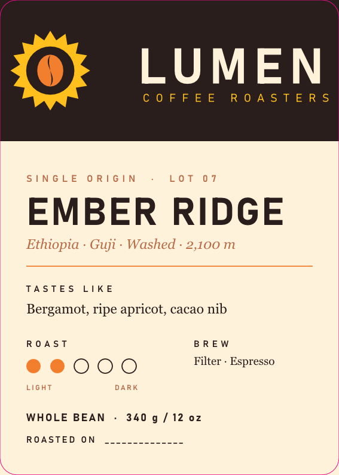
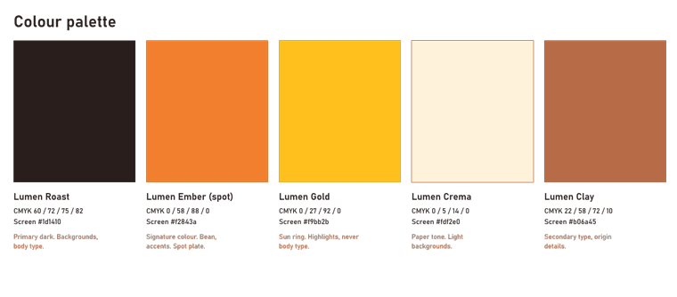
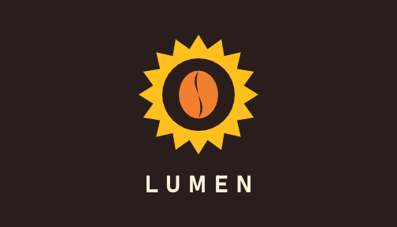
What it builds
- One CMYK document with 12 artboards (separate "pages" on one canvas) and a 3 mm bleed.
- The mark: a 16-point star with a circle cut out (the sun ring) and an ellipse with an S-curve cut out (the bean), made with pathfinder operations.
- Stacked and horizontal logo lockups, one-colour black, reversed, a clear-space diagram, the bag label, business card front and back, and a palette sheet.
- Exports:
.vectorcraft,.ai, a presentation PDF, a PDF/X-4 print file, 6 EPS files, SVG and PNG at 1x and 2x, and app icons at 1024, 512, 192, 180, 32 and 16 px.
Design decisions
- Five named colours, each with CMYK for print and hex for screen: Lumen Roast
#1d1410, Lumen Ember#f2843a(a spot ink), Lumen Gold#f9bb2b, Lumen Crema#fdf2e0, Lumen Clay#b06a45(build_identity.py:22-29). - Type: Bahnschrift (a clean, slightly condensed sans-serif) for the wordmark and labels; Georgia italic for descriptive lines.
- Clear space X = half the sun radius. Minimum logo size 25 mm in print and 120 px on screen. Label safe area 5 mm, die-cut corner radius 5 mm.
- Text converted to outlines, so the logo does not need the font installed.
Features to notice
- Spot colour: "Lumen Ember" is printed with its own premixed ink, not mixed from the four process inks, so the orange is the same on every print run.
- Dieline on an overprinting layer: the cutting line for the label shape is a separate ink ("Dieline", 0/100/0/0) that prints on top without knocking out the art below it. The printer uses it to make the cutting tool; it is never printed on the real label.
- PDF/X-4: an ISO standard PDF for print shops, here with trim marks, registration marks, colour bars and page information.
- Global swatches: change one swatch and every object that uses it changes.
- Multi-artboard export: one command writes every artboard as its own SVG and PNG.
What went wrong
- The first logo had the wordmark overlapping the star (session 1, phase B).
document.exportEpsfailed because theeps/folder did not exist. Fix: create it first.- Objects were drawn with a default stroke. Fix: set the default stroke to none and rebuild.
3.2 photocraft — a product photo with no camera build_hero.py · 03:18–03:27
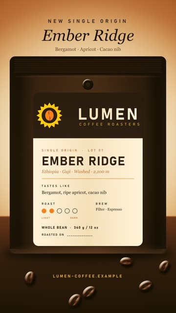
What it builds
- It asks vectorcraft to render the label artboard with the dieline hidden, as
label-1400w.png. - A 3000 × 2000, 16-bit RGB document: a gradient backdrop with a blurred glow, a tabletop with noise plus motion blur for wood grain, contact shadows.
- The bag: gradient body, a seal band with 7 crimp lines, side gussets, a degassing valve. The label sits on it, clipped to a die-cut rounded rectangle, shaded with a reflected gradient so it looks curved.
- 36 coffee beans in 3 clusters (14 + 16 + 6, random seed 42), each one a transformed copy of one master bean. Nearer beans are larger: scale =
0.8 + (ty-1600)/900*0.5. - Finishing layers: Curves, Colour Balance, Vibrance, film grain. Saved as
.pcraftand.psd, plus master PNG and TIFF. - Four recorded "actions" (
actions/*.json) make 1:1, 4:5 and 9:16 crops at 1080 px wide and a 2400 × 1600 web image.make_story_post.shadds 4 type layers to the 9:16 crop.
Features to notice
- Layers: 67 stacked, separately editable pieces. The PSD reopened with its layer tree intact.
- Smart object: the label is placed as a container that keeps its original pixels, so it can be scaled or filtered again without loss.
- Smart filter: a blur on a smart object stays editable.
- Layer styles: inner glow, inner shadow, drop shadow, bevel and emboss, gradient overlay — effects attached to a layer, not painted into it.
- Clipping and adjustment layers: a layer shows only inside the layer below it; colour corrections sit on top without changing pixels.
- Actions: a recorded list of steps that runs on many files.
What went wrong
automation command `file.placeEmbedded` uses ambient filesystem paths and is disabled; use capability-scoped document methods. Fix: open the label as its own document, copy, paste into the hero (build_hero.py:115).- The label and the valve overlapped on the first render. Fix: move both, rebuild.
- Story-post type styles used wrong character keys on the first try. Fix: read the type-style keys, rebuild.
- No script runs the 4 action files. They were run by hand in the session. A rebuild from scripts alone does not make the social crops.
3.3 lightcraft — grading a "shoot" make_shoot.sh, build_series.py · 03:27–03:31
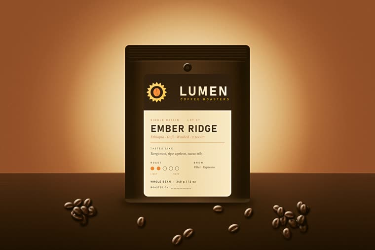
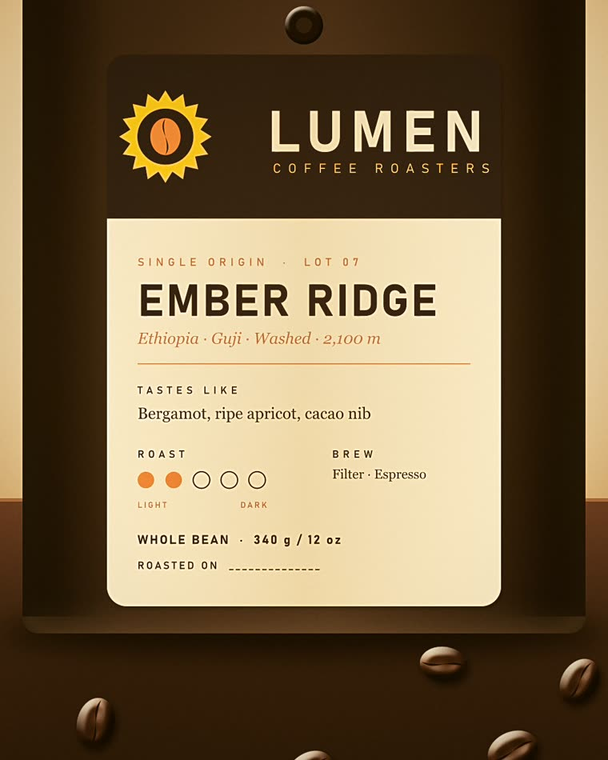
What it builds
make_shoot.shuses photocraft to cut 4 "frames" from the hero master: wide, label detail, beans right, beans left. They are renders, not camera RAW files.build_series.pyimports them into a lightcraft library, develops the wide frame, saves the look as preset "Lumen Warm Matte" and syncs it to all 4.- Per-frame changes: a 4:5 crop on the label frame; extra clarity and texture on the bean frames.
- Library work: ratings 5/4/3/3, title, caption, alt text, copyright, creator, location, keywords; the hero is marked as a pick; album "Ember Ridge launch — selects".
- Exports: 16-bit TIFFs in sRGB at 2048 px, sRGB full size, Display P3 at 300 ppi and Adobe RGB at 300 ppi.
Design decisions
The look (build_series.py:19-32): white balance 6900 K, tint +4; highlights −18; shadows +10; blacks +8; colour grading 30°/10 and 45°/8; vignette −14; grain 12. The first version was too strong; the agent softened it and fixed a label crop and two bean crops after it looked at the exports.
Features to notice
- Non-destructive develop: edits are stored as settings, the source file is never changed.
- Preset and sync: one look applied to a whole shoot, which is how a series stays consistent.
- Colour-managed export: the same image delivered in 3 colour spaces — sRGB for the web, Display P3 for modern screens, Adobe RGB for print.
What went wrong — the largest app failure of the project
The first export killed the MCP server: RuntimeError: server closed during tools/call, then OSError: [Errno 22] Invalid argument. Run directly from the CLI, the cause appeared:
Illegal instruction "$light" run --library library app.export … format=jpeg longEdge=2048 quality=86 exit=132
A test matrix showed that every 8-bit encode crashes — JPEG, PNG, WebP, AVIF and 8-bit TIFF — while 16-bit TIFF works (sRGB/8 exit=132, sRGB/16 exit=0). "Illegal instruction" means the program used a CPU instruction this processor does not have; the deliverables record notes the i5-12450H has no AVX-512. DNG export refused with DNG export needs a raw photo.
Fix: lightcraft delivers 16-bit TIFF masters only, and photocraft converts them to the web JPEGs. Exports run as separate lightcraft-cli run --library … processes, because a crash inside the MCP server ends the whole session with it. This JPEG step has no script; it was a one-off loop.
server closed during tools/call; the CLI showed exit code 132.3.4 effectcraft — the motion package build_motion.jsx · 03:31–03:36
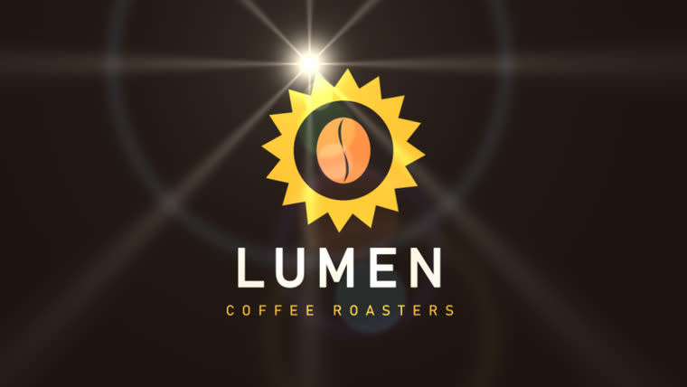
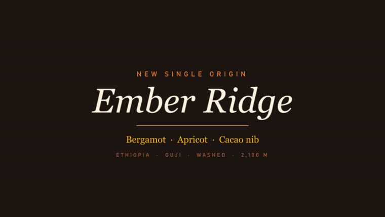
What it builds
Seven compositions ("comps"), all 1920 × 1080 at 30 fps: Logo Sting (5 s), Title Card (4 s), two lower thirds (6 s each, transparent), End Card (4 s), Logo Sting Web (4 s), and Music Bed (30 s). Renders: the sting as H.264 and as ProRes 4444 with alpha; title and end cards; lower thirds as ProRes 4444 with alpha; the web sting as a transparent WebM and as a Lottie JSON file with 0 export warnings. The render and Lottie commands are not in the script; DELIVERABLES.md records them.
Design decisions
- The logo is redrawn natively as shape layers, from the same 16 points and ratios as vectorcraft. The subagent checked the curves: they match.
- The wordmark letter-spacing animates from 700 to 0, so the letters close in. Easing uses keyframe influence of 50–85 %.
- Lower-third bar 820 × 150 at 92 % opacity, with a 12 px Ember accent bar.
- A 30 s music bed of sine-wave chords (section 7 explains why this failed).
Features to notice
- Shape layers with Merge Paths: vector shapes that can be animated point by point.
- Text animators: spacing and position change per letter.
- Lens Flare: a simulated light flare sweeps across the logo.
- ProRes 4444 with alpha: a professional video format that stores transparency, so the lower thirds can sit over other footage in the editor.
- Lottie: a small JSON file that a web page plays as live vectors — sharp at any size, much smaller than a video.
What went wrong
effectcraft-cli script: build_motion.jsx:6:44: TypeError: not a callable function— the JSX engine has noString.substr; the hex-colour parser used it. Fix: rewrite the parser. Because the script failed, everyrender-framethen reportedno composition "Logo Sting".- Bahnschrift is one variable font, and effectcraft exposes only "Regular".
Can not add "ADBE Text Font Axis" to an animator's Properties. Fix: fake Bold with a same-colour stroke at 2.4 % of the type size. - The first sting had a glow and a strong flare; the agent removed the glow and softened the flare after review frames.
cannot write renders/lumen-logo-sting-web.lottie.json: The system cannot find the path specified. (os error 3)—execpaths resolve from the working folder,renderpaths from the project folder. Fix: absolute path.- lottie-web (the standard web player) ignores Merge Paths, so the holes in the sun and bean filled in. Fix: a separate web comp with even-odd fills; checked in Chrome on a checkerboard.
3.5 filmcraft — the edit build_spot.py · 03:36–03:48
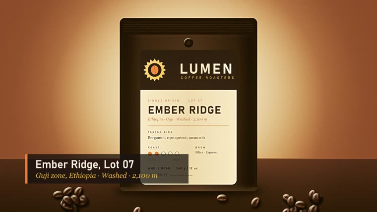
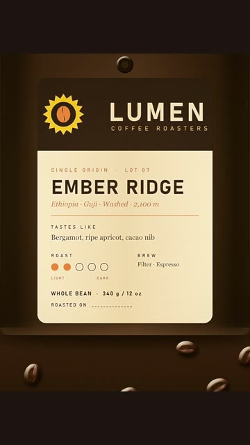
What it builds
- The :30 sequence, 1920 × 1080, 30 fps: sting 0–5 s, title 5–9, wide 9–15, label over a Roast-colour matte 15–19, bean close-up 19–23, second bean close-up 23–26, end card 26–30. The bean shots are slow push-ins on the 3000 px lightcraft master at 100 %, so nothing is upscaled.
- Lower thirds at 9.5 s and 18.6 s, 12-frame cross dissolves, music at −6 dB, 7 English captions.
- Exports: H.264 (16 Mb/s, 2-pass, −16 LUFS) with an SRT caption file; ProRes 422 HQ master; EDL, FCP7 XML, FCPXML and OTIO interchange files.
- A vertical 1080 × 1920 :15 from the story post, label and end card, H.264 at 12 Mb/s, −14 LUFS.
Features to notice
- Keyframed motion: slow zooms and pans on still images (the "Ken Burns" move).
- Caption track and SRT sidecar: subtitles as a separate file that platforms read.
- Loudness normalisation (LUFS): the standard measure that makes a video as loud as its neighbours on a platform; −16 and −14 LUFS are common web targets.
- Interchange files: EDL, XML, FCPXML and OTIO let other editing apps rebuild the same timeline.
What went wrong
RuntimeError: tools/call: {'code': -32602, 'message': 'unknown argument "paths" for media_import; expected: text'}. Fix: use the commandfile.import {paths}.timeline.place {"item": null, …}— invalid parameters. The item lookup by file name returned nothing. Fix: inspect the project tree, walk it by name.- The bean shots were first soft. Fix: export full-size 16-bit sRGB masters from lightcraft (3000 × 2000) and crop at 100 %.
- MP4 files are written with the index (
moov) after the media data (mdat), so a browser cannot start playback until it can request byte ranges. No option was found to change this. Fix for local QC:tools/rangeserve.py, a static server with HTTP Range support. - The interchange files lose detail (from the build log): the EDL "holds one video track", colour mattes are exported "as black (BL)", and FCPXML writes the colour matte as a gap.
3.6 designcraft — the brand guidelines build_guidelines.py · 03:48–03:52
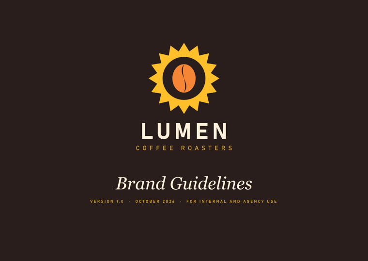
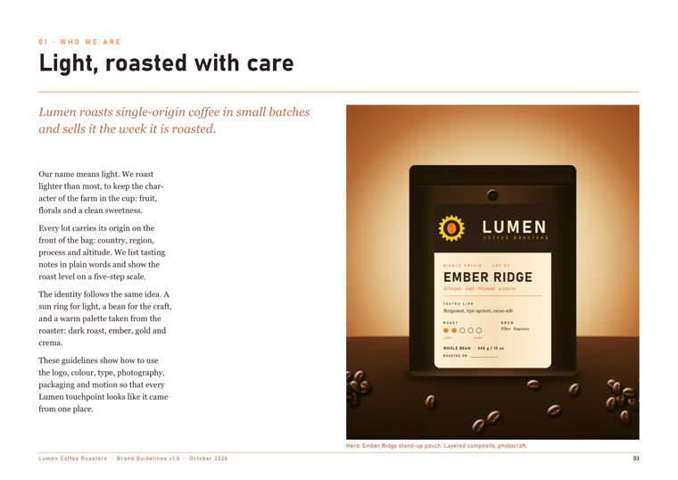
What it builds
- 12 A4 landscape pages (842 × 595 pt): 48 pt margins, a 12-column grid, 8.5 pt bleed.
- Cover, contents, story, logo, variations, clear space, colour, type, photography, packaging, motion, back cover. Vector logos are placed as pages of the vectorcraft PDF, so they stay sharp.
- 12 paragraph styles; a contents list generated from the H1 style, with page numbers.
- Preflight at a minimum of 150 ppi; exports a tagged PDF with bookmarks, a PDF/X-4 with bleed and marks, IDML, and a PNG per page.
Design decisions
Body text Georgia 10/15 pt. A colour-proportion bar shows how much of each colour to use: Roast 55 %, Crema 25 %, Clay 8 %, Ember 8 %, Gold 4 %.
Features to notice
- Paragraph styles: named text formats; change the style and every paragraph using it changes.
- Generated table of contents: built from the headings, with live page numbers.
- Preflight: an automatic check for print problems such as low-resolution images.
- Tagged PDF: the PDF carries reading order and structure for screen readers.
- IDML: the open interchange format that InDesign reads.
What went wrong
- Parent pages (templates shared by many pages) could not be addressed headless:
export_png: no page 2during the probe. Fix: place the footer on each page with afooter()function. toc.generateneeds apageargument.- The first build lacked a transparent reversed lockup and the contents list was wrong. Fix: add the lockup in vectorcraft, fix the contents, rebuild both.
- Preflight reported 0 errors and 0 warnings, but the PDF/X-4 export itself logged 11 warnings: 10 RGB images need an ICC profile under the CMYK output intent, and 1 placed PDF is version 1.7 inside a 1.6 file.
DELIVERABLES.mdreports only the preflight result.
3.7 pdfcraft — the press kit build_presskit.py · 03:51–03:54
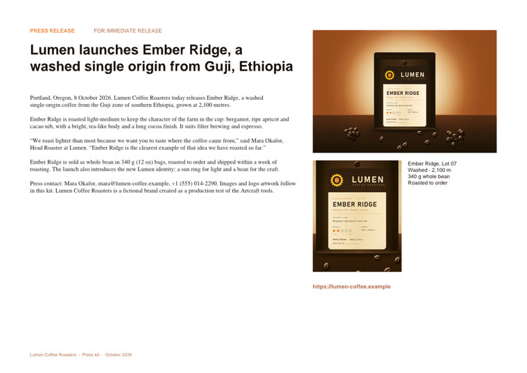
What it builds
- Combines the 12 guideline pages with 6 identity pages, and adds an authored press-release page (text, hero image, label image, fact box): 19 pages.
- A bookmark tree; page labels "PR", 1–12 and "A-1…"; a footer on the appendix; a live URL link; 4 metadata fields.
- An accessibility check, automatic fixes for
titleandprimary-language(en-US), and a second check. - A 2-page product sheet (pages extracted), 3 section PDFs (split by bookmark), and a protected distribution copy: printing allowed, changes and copying not allowed.
Features to notice
- Page labels: the viewer shows "PR" or "A-1" in place of raw page numbers.
- Split by bookmark: one command makes one PDF per chapter.
- Accessibility check and fix: failed rules went from 6 to 4.
- Encryption: the distribution copy uses AES-256 (the file shows
/V 5 /R 6 /CFM /AESV3).
What went wrong
page_number {"doc": 1, "from": 14, "to": [{"height": 595.0, …— the script passed the page list where a number was expected, becausedoc_info.pagesis a list, not a count.- The kicker line on the press page wrapped badly:
page_add_textwraps narrow. It took 3 rebuilds: an explicit width, then splitting it into two text items. - 4 accessibility rules still fail on the combined kit (tagged-pdf, tagged-content, tagged-annotations, tab-order): combining dropped designcraft's tags.
- The product sheet is 34 MB for 2 pages, because extraction kept the full-size images.
- The permissions password for the distribution copy is a plain literal in
build_presskit.py:103. It is not printed here.
4. The crux: one style and one message across 7 apps
The user's question was: how can style and message stay consistent across all the crafts? This build gives an honest answer in two parts — what was done, and what leaked.
4.1 What this build did
Files carried the look. Where one craft used another craft's output file, consistency was automatic, because it was literally the same artwork:
- vectorcraft's label artboard → photocraft's hero bag (rendered to
label-1400w.png, pasted as a smart object). - photocraft's hero master → lightcraft's 4 frames → filmcraft's wide and bean shots, designcraft's photography page, pdfcraft's press page.
- effectcraft's renders → filmcraft's timeline; effectcraft's review frames → designcraft's motion page.
- vectorcraft's presentation PDF → designcraft's logo pages and pdfcraft's appendix; designcraft's guidelines PDF → pdfcraft's press kit.
Copy-paste carried everything else. No shared brand file exists. Each of the 7 build scripts types the colours, fonts, product facts and copy lines again. The research subagent found the five colour hexes re-declared in designcraft, effectcraft, pdfcraft, filmcraft and the story-post script, and the product facts (Ethiopia, Guji, Washed, 2,100 m; Lot 07; Mara Okafor; 340 g / 12 oz) in five or six scripts each. vectorcraft → effectcraft has no file handoff at all: effectcraft redraws the logo from copied numbers. It matches, but only because the numbers were copied correctly.
4.2 What leaked — 13 inconsistencies
The subagent's audit found these. None was fixed in this pass; this page documents them.
- Tasting notes, 4 forms: "Bergamot, ripe apricot, cacao nib" (label, video caption, guidelines); "Bergamot · Apricot · Cacao nib" (story post, title card); the guidelines and press release add "bright, tea-like … long cocoa finish".
- Origin line, 5 forms: "Ethiopia · Guji · Washed · 2,100 m"; "ETHIOPIA · GUJI · WASHED · 2,100 M" (the metre becomes a capital M); "Guji zone, Ethiopia"; "2,100 metres" and "2,100 m" in the same press kit.
- Fonts: the press-release page uses Helvetica and Times, not Bahnschrift and Georgia. The tagline is SemiLight in vectorcraft and Regular in effectcraft.
- Off-palette colour: the story post's tasting notes use
#6b3f24, which is not Clay (#b06a45). - Bleed: 8.504 pt in vectorcraft, 8.5 pt in designcraft; both labelled 3 mm.
- Letter-spacing: the guidelines say capitals use 300 tracking; the label uses 380 and the kickers 420.
- Logo misuse rules: vectorcraft lists 4; designcraft adds "rotate" and "shadows".
- URL and email forms: capitals on the story post, "https://" only in pdfcraft; email mara@ on the card and press release, hello@ on the back cover.
- Records:
DELIVERABLES.mdsays 14 paragraph styles; the code makes 12. - Records: "preflight 0 errors / 0 warnings" is true, but the PDF/X-4 export logged 11 warnings.
- Records:
DELIVERABLES.mdsays "all → designcraft → pdfcraft"; filmcraft is an end point and feeds neither. - Records: the
build_motion.jsxheader lists 5 comps; the code makes 7. - Possible: the guidelines say keep type 250 px clear of the bottom of a story; the story URL is placed at y = 1702 of 1920 (218 px). Not confirmed, because the anchor point of that y value is unknown.
4.3 Advice for the next build recommendation, not done here
- One brand file, read by every script. Put the colours (hex and CMYK), fonts with weights, tracking values, bleed, and every approved copy line (tasting notes, origin line, URL, contacts) in one
brand.json. Each build script loads it and contains no brand literals. - Pass artwork as files, never as numbers. effectcraft should import the vectorcraft SVG of the mark, not redraw it from copied coordinates.
- Write the message once. Approve a short "message house" — headline, 3 proof points, one call to action — and generate captions, story text, press copy and guideline text from it.
- One check after each build. A small script that searches every build script and text export for any hex code or copy line that is not in
brand.json. It would have caught items 1, 2, 4 and 8. - Build the guidelines from the brand file. designcraft's tracking, safe-zone and misuse rules should come from the same file the other crafts read, so the book cannot disagree with the work.
5. Tools and features used
| Tool | What it did in this project |
|---|---|
| Bash (Git Bash) | Session 1: 122 calls — downloads, checksums, CLI runs, test matrices, ffprobe checks. |
| Read / Edit / Write | 53 / 26 / 18 calls in session 1: build scripts, DELIVERABLES.md, HANDOFF.md, memory files. |
| WebFetch, WebSearch | 17 and 1 calls: GitHub org pages, READMEs, the Codex MCP documentation. |
| AskUserQuestion | Session 1: one form with 4 questions before the build. Session 2: two forms (next task; format and scope of this page). |
| Claude in Chrome | Session 1: QC of SVGs, the Lottie file and the press-kit PDF in the browser (7 computer, 6 javascript, 5 navigate calls). |
tools/mcpclient.py | The minimal MCP stdio client every Python build script uses. |
tools/rangeserve.py | Static web server with HTTP Range support, for MP4 playback in the browser. |
gh CLI | Created and pushed az9713/artcraft-tutorial; enabled GitHub Pages. |
| ffmpeg / ffprobe | Session 2: loudness (EBU R128) and per-second level of the jingle takes and the new exports; thumbnails for this page. |
| ElevenLabs connector | Session 2: Music v2.5, three 30 s jingle takes. |
| Skills | handoff-after-clear (end of session 1); music (session 2, for the ElevenLabs API); dev-journey (this page). |
| Subagents and advisor | Session 1: none — all work inline. Session 2: one general-purpose subagent (the design-decision and consistency audit in sections 3 and 4) and one advisor consultation before this page was written. |
Invisible constraints that shaped the output. The user's global rules were active in both sessions: replies in ASD-STE100 Simplified Technical English; precise, not rhetorical phrasing; dark-mode HTML. A "ponytail" hook pushed toward the smallest working change. A "coach" hook warned about context size (section 9).
6. What went wrong, and the fixes
The app-specific failures are in each craft's subsection. These are the harness and process failures — problems of Claude Code, the shell, or the agent, not of the crafts.
UnicodeEncodeError: 'charmap' codec can't encode character '\u2192' in position 22— Windows Python printed to a cp1252 console; the catalogues contain "→". Failed twice before the fix: run Python with-X utf8.make.sh: line 2: : command not found(exit 127) — the corrected logo script used$vec, which was set but not exported to the child shell. Fix:exportthe variables after. projects/env.sh.ModuleNotFoundError: No module named 'mcpclient'— an inline probe could not import the new client. Fix: each build script insertstools/intosys.pathitself (for examplebuild_spot.py:10).File has not been read yet. Read it first before writing to it.— the agent tried to overwriteMEMORY.mdwithout reading it.CDP sendCommand "Page.captureScreenshot" timed out after 30000ms— Chrome ran with its window hidden (visibilityState: hidden). It did not load<video>elements. Video was checked by decoding frames in effectcraft instead.ConnectionResetError: [WinError 10054]from Python's simple web server when Chrome asked for byte ranges; this led torangeserve.py.- Lost checkout. The git copy of
artcraft-tutoriallived in the session scratchpad, which is deleted at/clear.HANDOFF.mdsays to clone it again before editing the page. - Near-miss: the first lightcraft failure looked like an MCP protocol bug (
OSError: [Errno 22] Invalid argument). It was an app crash, which the plain CLI run showed as exit code 132.
7. Session 2: the music that failed
After /clear, session 2 resumed from HANDOFF.md. Asked which task to do, the user wrote:
The sound effect is bad. it is a monotone noise. remove it or come up with better. can music be created like a short jingo
Why the first score failed — an agent design error
The "music" was a 30 s bed that the session 1 agent specified in build_motion.jsx:192-208 and effectcraft rendered with its Tone effect: four sustained 5-note sine-wave chords, Dmaj9 – Bm11 – Gmaj9 – A6/9, 7.5 s each, with 0.75 s crossfades. effectcraft rendered these settings as specified, so the faults below are in the specification:
- Sine waves have no overtones; they sound like test tones.
- No melody, no rhythm, no attack: the sound changes 4 times in 30 s.
- Every chord contains two notes a whole tone apart, which beat at 40.36, 35.97, 26.94 and 30.24 Hz. In that range the ear hears a rough buzz. (Calculated from the script's frequencies, not measured in the WAV.)
- The chords change at 7.5, 15 and 22.5 s; the picture cuts at 5, 9, 15, 19, 23 and 26 s. 1 of the 3 chord changes (15 s) falls on a cut. The logo appears during a 2.0 s fade-in, and the end card has a 3 s fade-out with no final chord.
Session 1 had checked this file only by level ("WAV RMS ≈ -17 dBFS"). A level check cannot hear music. A fuller explanation is in projects/filmcraft/temp-score-explained.html.
The replacement, and a broken promise
- The ElevenLabs connector (Music v2.5, flow
ckO0MhirZeulZW65EMCF) made 3 takes of a 30 s instrumental jingle: marimba, acoustic guitar, upright bass, light percussion, about 100 BPM, a four-note hook at the start and a resolved final chord. 900 credits each, 2,700 credits ($0.45) in total. Generation took about 2 minutes. - The agent cannot hear audio, so it selected by measurement: take B starts with 1.18 s of silence (under the logo); take A lifts at 19 s; take C starts at once, lifts at 9 s on the wide-shot cut, and ends with a decay to −39 dB in the last 0.5 s. Take C was chosen.
build_spot.pywas changed to loadfilmcraft/music/lumen-jingle-30s.mp3, and the :15 now uses the jingle's last 15 s so it ends with the end card. The rebuild took about 3 minutes.- Checks: :30 at −16.0 LUFS (peak −3.2 dBFS), :15 at −14.0 LUFS (peak −2.0 dBFS), ProRes master at −19.2 LUFS (the build sets no target for it). The per-second level of each export follows take C.
The cost to the original brief: Brief 2 said "Every artifact will be created by the crafts." The music is now made by an external AI service. DELIVERABLES.md gap 7 and the build_spot.py header say so.
8. Verification
| Claim | How it was checked | When |
|---|---|---|
| Downloads are genuine | SHA-256 of each zip against SHA256SUMS.txt | S1 |
| Images and pages look right | The agent viewed PNG renders after each build and rebuilt after faults (2–3 rounds on most crafts) | S1, not re-checked |
| Print PDFs are valid | pdfcraft check on the vectorcraft PDF/X-4 (PDF 1.6, 3 pages, 0 warnings) and all press-kit PDFs | S1 |
| Guidelines print-ready | designcraft preflight 0 errors / 0 warnings (but 11 export warnings, see 3.6) | S1 |
| Layered PSD survives | Reopened with info: 16-bit, layer tree intact, 67 layers | S1 |
| ProRes has transparency | filmcraft probe: Apple ProRes 4444, has_alpha, YUVA 4:4:4 12-bit | S1 |
| Lottie plays on the web | lottie-web 5.12.2 in Chrome on a checkerboard; holes transparent | S1 |
| Videos are correct | H.264 probe (High, 1920 × 1080, AAC 48 kHz, 30.0 s); frames decoded in effectcraft and viewed; EDL read | S1 |
| New music is in the videos | EBU R128 loudness and per-second level of each export against take C | S2 |
| Demo server works | HTTP 206 for _qc/index.html, _qc/lottie.html and the :30 MP4 | S2 |
| Thumbnails on this page | Made with ffmpeg and pdfcraft render from the current outputs; the bag label was viewed | S2 |
Not verified: the jingle by ear (the user has not confirmed take C); video playback in a visible browser (Chrome was hidden in session 1); the .ai, .psd and .idml files in Adobe's own apps; the raw-photo path of lightcraft (the shoot is renders, not RAW); this page in a browser.
9. Costs, limits and agents
- Context: the coach hook reported about 186k tokens at the start of the build and about 489k at the handoff — it called this "god-session territory". Session 2 passed 150k before this page was started.
- Money: ElevenLabs 2,700 credits, $0.45. No other paid service was used.
- Wall clock (from transcript times, UTC): research report 13:29–15:20 (about 1 h 50 min); install and first logo 21:31–21:35; production build 03:13–04:00 (47 min) for 7 crafts including all rebuilds; handoff 13:33–13:36. The gap 21:35–03:12 is idle time.
- Disk: about 1.55 GB of outputs and 1.4 GB of app builds. The ProRes master alone is 567,053,562 bytes.
- Hardware limit: the i5-12450H cannot run lightcraft 0.4.0's 8-bit encoders.
- Agents: session 1 used no subagents and no advisor. Session 2 used one subagent (about 158k tokens, 25 tool calls, 8.7 minutes) for the build-file audit. The advisor, consulted before writing, did not change the plan; it added the scope note at the top, the request to quote all three briefs, and two redactions: the press-kit password and the access code in the ElevenLabs flow link.
10. Where things stand
Done
- All 7 crafts produced production-format deliverables, listed in
projects/DELIVERABLES.md. - The tutorial page is live at az9713.github.io/artcraft-tutorial.
- The spot uses the ElevenLabs jingle (take C).
Unfinished, and why
- The 10 known gaps in
DELIVERABLES.mdstand: lightcraft 8-bit crash, untested RAW path, photocraftplaceEmbedded, Bahnschrift weights, Lottie Merge Paths, MP4 fast start, music (now external), designcraft parent pages, pdfcraft accessibility and 34 MB product sheet, hidden Chrome. - Not fully scripted: the photocraft action batches, the story-post input, the TIFF → JPEG conversion, and the effectcraft render and Lottie commands were run by hand. A rebuild from the scripts alone is incomplete until these are scripted.
- The 13 consistency drifts in section 4.2 are documented, not fixed.
- The demo page
projects/_qc/index.htmlshows 4 of 7 crafts; photocraft, lightcraft and designcraft are missing. - Old music (
lumen-temp-score-30s.wavand the "Music Bed 30s" comp) is still in the effectcraft project, unused.
Knowledge captured
HANDOFF.md— resume point, rebuild order, CLI facts that cost time.projects/DELIVERABLES.md— file index, verification, the 10 gaps.- Memory:
amiqa-ask-questions.md,production-grade-no-toys.md. projects/filmcraft/temp-score-explained.html— the music post-mortem.- This page and
journey-img/(17 thumbnails, 556 KB).
Next steps (options)
- Listen to take C and keep it or change it.
- Make
brand.jsonand fix the 13 drifts (section 4.3). - Script the hand-run steps so one command rebuilds everything.
- Fix the press-kit accessibility and the 34 MB product sheet.
- Report the lightcraft exit-132 crash and the filmcraft MP4 fast-start issue to the Artcraft project.